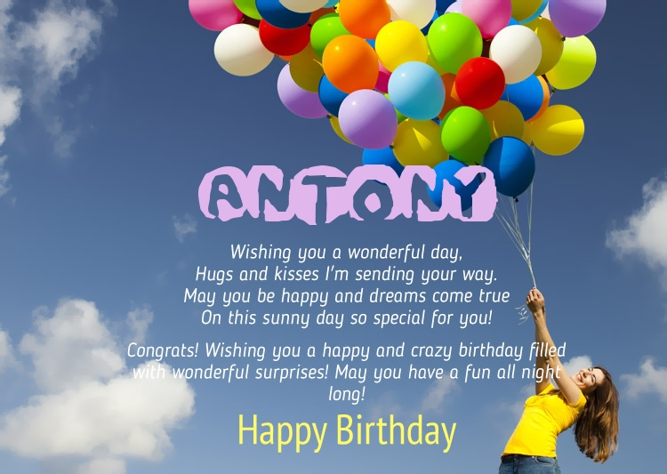

by Bais to his dear friend
Antony


Человек становится личностью значемой не из-за того что он пережел или из-за того что он постродал в следствии чего-то, а ТОЛЬКО из-за своих достежений в жизни.
в своём молодом возрасте, ты уже стал личностью значимоё, только из-за своих достижений.
- в пору школьных лет всегда был достойным и спроведливым человеком, никогда не завидовал ни кому,не хвастолся тем что имеешь сам и не имеют другие(ну по крайней мере я об этом не знаю)
- в момент прохождения обучения в универе, ты не сидел на жопе ровно, а пошел дальше и начал развиваться
- постоянно развивался и бустил свой прогресс нереальными шогами
- бля антох прости но, я уже заебался вспоминать твои достижения и писать, так что с др тебя.